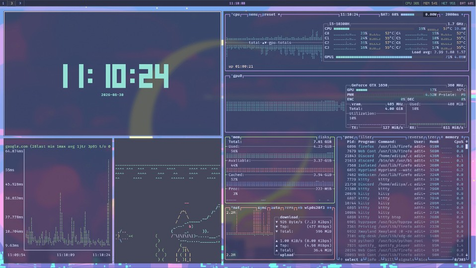

AUG 2025
— MAY 2027
— MAY 2027
Georgia Institute of Technology
MS in Computer Science · Atlanta, Georgia
ML Systems, Deep Learning in Text Data, Deterministic Optimization
WELCOME TO MY HOMEPAGE
PERSONAL HOMEPAGE
machine learning, research, and notes
Hey there! I'm Aditya Ghosh, a Computer Science MS student at Georgia Tech.
I design and build applied machine learning systems across computer vision, natural language processing, and production ML.
My work spans customer intelligence, additive manufacturing, medical imaging, language models, and generative temporal models.
MS in Computer Science · Atlanta, Georgia
ML Systems, Deep Learning in Text Data, Deterministic Optimization
B.Tech. in Computer Science and Engineering · Vellore, India
Specialization in Data Science
Machine Learning Intern · Atlanta, Georgia
Graduate Assistant · Atlanta, Georgia
Student Researcher · Atlanta, Georgia
Research Intern · Kharagpur, India
Research Intern · Kolkata, India
FEATURED CASE STUDY · DATA4GOOD 2025
Built an ensemble of a fine-tuned DeBERTa MNLI model and an Azure OpenAI gpt-5-mini judge to detect factual consistency, contradictions, and irrelevant responses.
Regional champions: 1st in the East region out of 1,015 teams, with 96.5% final accuracy.

PERSONAL SETUP · LINUX
Configuration for my day-to-day Linux environment, including Hyprland, Waybar, Kitty, Neovim, terminal monitors, launchers, notifications, and music tools.